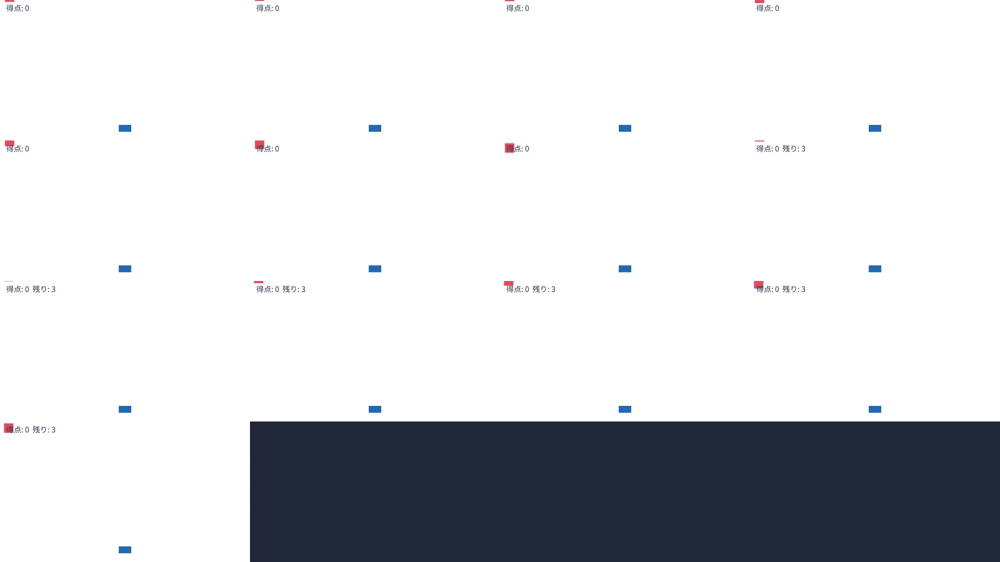
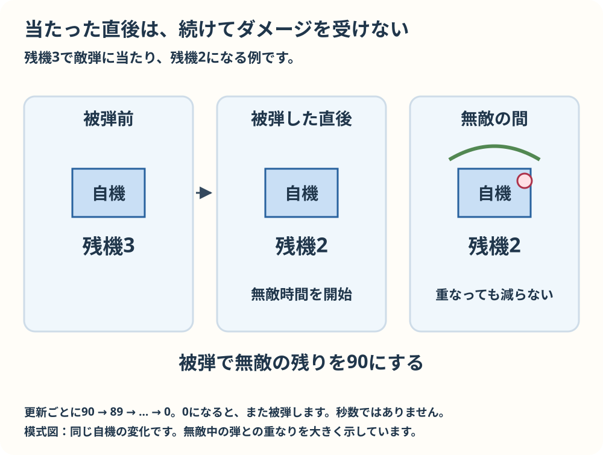

シンプルなシューティングの発展
基本の完成版から3つの機能を順番に追加します。
始める前に
基本編の完成版から始めます。ZIPを展開してできたフォルダーでindex.htmlを開きます。ZIPには基本編の3ファイルが入っています。
WindowsでZIPを展開する（動画）
自分で作った基本版でも同じ内容なら使えます。
各段階の変更を上から順に作業用の script.js に加えます。変更前と同じ範囲を探して、変更後のコードに置き換えてください。保存したら index.html を開くか、再読み込みします。
ステップ 1：速さと耐久の違う敵
このステップの見本を図で見る

このステップの見本
for (const enemy of enemies) enemy.y += 2;
変わったコードの一例（script.js）for (const enemy of enemies) enemy.y += enemy.speed;
見本で確かめること
濃い色の敵には2発、赤い敵には1発当てると倒せます。
目標
速さと耐久が違う2種類の敵を交互に出します。
確認欄までは準備中です。作業を順に進め、確認欄で保存して動作を確かめます。
書く場所と置き換えるコード
敵の出現数を覚える
作業用フォルダーの script.js で、次の範囲を探して置き換えます。
置き換える範囲
let bullets, firing = false, cooldown, enemies, spawnTimer, score, state;
置き換えるコード
let bullets, firing = false, cooldown, enemies, spawnTimer, score, state, spawnCount;
spawnCount はこれまでに出した敵の数です。
出現数を初期化する
作業用フォルダーの script.js で、次の範囲を探して置き換えます。
置き換える範囲
enemies = []; spawnTimer = 0; score = 0; state = "playing";
置き換えるコード
enemies = []; spawnTimer = 0; score = 0; state = "playing"; spawnCount = 0;
始めるとき出現数を0にします。
敵の速さと耐久を決める
作業用フォルダーの script.js で、次の範囲を探して置き換えます。
置き換える範囲
enemies.push({ x: Math.random() * (canvas.width - 30), y: -30 });
置き換えるコード
const tough = spawnCount % 2 === 1;
enemies.push({ x: Math.random() * (canvas.width - 30), y: -30, size: 30,
speed: tough ? 2 : 1, hp: tough ? 2 : 1 });
spawnCount++;
出現数を2で割った余りから通常敵と丈夫な敵を交互に作ります。丈夫な敵は速さ2、耐久2、通常敵は速さ1、耐久1です。
敵ごとの速さで動かす
作業用フォルダーの script.js で、次の範囲を探して置き換えます。
置き換える範囲
for (const enemy of enemies) enemy.y += 2;
置き換えるコード
for (const enemy of enemies) enemy.y += enemy.speed;
各敵の speed を縦位置に足します。
敵の大きさと耐久で当たりを調べる
作業用フォルダーの script.js で、次の範囲を探して置き換えます。
置き換える範囲
if (!bullet.hit && !enemy.hit && bullet.x < enemy.x + 30 &&
bullet.x + 6 > enemy.x && bullet.y < enemy.y + 30 && bullet.y + 12 > enemy.y) {
bullet.hit = true; enemy.hit = true; score++;
置き換えるコード
if (!bullet.hit && !enemy.hit && bullet.x < enemy.x + enemy.size &&
bullet.x + 6 > enemy.x && bullet.y < enemy.y + enemy.size && bullet.y + 12 > enemy.y) {
bullet.hit = true;
enemy.hp--;
if (enemy.hp <= 0) { enemy.hit = true; score++; }
敵ごとの size で重なりを調べ、弾が当たると hp を1減らします。0以下のときだけ敵を消し得点します。
敵の大きさで下端を調べる
作業用フォルダーの script.js で、次の範囲を探して置き換えます。
置き換える範囲
if (enemies.some((enemy) => enemy.y + 30 >= canvas.height)) state = "over";
置き換えるコード
if (enemies.some((enemy) => enemy.y + enemy.size >= canvas.height)) state = "over";
敵の下端は enemy.y + enemy.size です。
耐久に応じて敵を描く
作業用フォルダーの script.js で、次の範囲を探して置き換えます。
置き換える範囲
ctx.fillStyle = "#e34b5f";
for (const enemy of enemies) ctx.fillRect(enemy.x, enemy.y, 30, 30);
置き換えるコード
for (const enemy of enemies) {
ctx.fillStyle = enemy.hp > 1 ? "#913d64" : "#e34b5f";
ctx.fillRect(enemy.x, enemy.y, enemy.size, enemy.size);
}
耐久が2以上なら濃い色、それ以外は通常の色で、各敵の大きさを使って描きます。
保存後の確かめ方
保存してゲーム画面を更新する（動画）
index.html を再読み込みします。濃い色の敵には2発、赤い敵には1発当てると倒せます。 この段階の見本を開く
小さな練習
丈夫な敵の体力2を3に変えて比べます。 練習後はコードを元に戻してください。
ステップ 2：敵弾と残り回数
このステップの見本を図で見る
このステップの見本
ctx.fillText("得点: " + score, 20, 35);
変わったコードの一例（script.js）ctx.fillText("得点: " + score + " 残り: " + lives, 20, 35);
見本で確かめること
敵弾に当たると残りが1減り、「無敵中」が表示されます。
目標
敵の弾を避け、被弾後はしばらく無敵になります。
確認欄までは準備中です。作業を順に進め、確認欄で保存して動作を確かめます。
書く場所と置き換えるコード
敵弾と残り回数を覚える
作業用フォルダーの script.js で、次の範囲を探して置き換えます。
置き換える範囲
let bullets, firing = false, cooldown, enemies, spawnTimer, score, state, spawnCount;
置き換えるコード
let bullets, firing = false, cooldown, enemies, spawnTimer, score, state, spawnCount, enemyBullets, lives, invulnerable, enemyShotTimer;
enemyBullets は敵弾、lives は残り回数、invulnerable は無敵時間、enemyShotTimer は次の敵弾までの待ちです。
敵弾と残り回数を初期化する
作業用フォルダーの script.js で、次の目印を探し、その直後に書きます。
目印
enemies = []; spawnTimer = 0; score = 0; state = "playing"; spawnCount = 0;
書き足すコード
enemyBullets = []; lives = 3; invulnerable = 0; enemyShotTimer = 120;
敵弾を空にし、残り3、無敵0、敵弾まで120にします。
敵から弾を出す
作業用フォルダーの script.js で、次の目印を探し、その直後に書きます。
目印
enemies = enemies.filter((enemy) => !enemy.hit);
書き足すコード
if (invulnerable > 0) invulnerable--;
enemyShotTimer--;
if (enemyShotTimer <= 0 && enemies.length > 0) {
enemyBullets.push({x: enemies[0].x + enemies[0].size / 2 - 3, y: enemies[0].y + enemies[0].size});
enemyShotTimer = 120;
}
無敵と発射のタイマーを減らし、待ち時間が0以下で敵がいれば先頭の敵から弾を出して120に戻します。
敵弾を下へ動かす
作業用フォルダーの script.js で、次の目印を探し、その直後に書きます。
目印
if (invulnerable > 0) invulnerable--;
enemyShotTimer--;
if (enemyShotTimer <= 0 && enemies.length > 0) {
enemyBullets.push({x: enemies[0].x + enemies[0].size / 2 - 3, y: enemies[0].y + enemies[0].size});
enemyShotTimer = 120;
}
書き足すコード
for (const shot of enemyBullets) {
shot.y += 4;
}
敵弾を順に取り出し、縦位置を4増やして下へ進めます。

残機3のときに敵弾に当たると、残機は2になります。同時に無敵の残りを90にし、更新ごとに1ずつ減らします。無敵中は次の弾に重なっても残機が減りません。0になると、また被弾するようになります。
90は秒ではなくカウンターの値です。コードでは更新中に減らしてから衝突を調べ、被弾時に90を設定します。図は自機と重なる敵弾を拡大しています。
敵弾と自機の当たりを調べる
作業用フォルダーの script.js で、次の目印を探し、その直後に書きます。
目印
shot.y += 4;
書き足すコード
if (shot.x < playerX + playerWidth && shot.x + 6 > playerX &&
shot.y < playerY + 22 && shot.y + 12 > playerY) {
shot.hit = true;
if (invulnerable === 0) {
lives--;
invulnerable = 90;
if (lives === 0) state = "over";
}
}
敵弾が自機と重なれば命中にします。無敵でなければ残り回数を1減らし90回の更新を無敵にします。0なら終了です。
命中した敵弾を除く
作業用フォルダーの script.js で、次の目印を探し、その直後に書きます。
目印
if (lives === 0) state = "over";
}
}
}
書き足すコード
enemyBullets = enemyBullets.filter(shot => !shot.hit && shot.y < canvas.height);
命中した弾と画面の下へ出た弾を filter() で除きます。
敵弾を描く
作業用フォルダーの script.js で、次の目印を探し、その直後に書きます。
目印
ctx.fillStyle = "#edaa27";
書き足すコード
for (const shot of enemyBullets) ctx.fillRect(shot.x, shot.y, 6, 12);
敵弾も幅6、高さ12の四角で描きます。
残り回数と無敵を表示する
作業用フォルダーの script.js で、次の範囲を探して置き換えます。
置き換える範囲
ctx.fillText("得点: " + score, 20, 35);
置き換えるコード
ctx.fillText("得点: " + score + " 残り: " + lives, 20, 35);
if (invulnerable > 0) ctx.fillText("無敵中", 650, 35);
得点と残り回数を表示し、無敵時間が残っている間は「無敵中」を表示します。
保存後の確かめ方
敵弾に当たると残りが1減り、「無敵中」が表示されます。Rで残り3に戻ります。 この段階の見本を開く
小さな練習
無敵の90更新を120に変えて比べます。 練習後はコードを元に戻してください。
ステップ 3：ボスを倒す
このステップの見本を図で見る
このステップの見本
if (spawnTimer <= 0) {
変わったコードの一例（script.js）if (spawnTimer <= 0 && !bossStarted && score < 6) {
見本で確かめること
敵を6体倒すと大きなボスが現れ、6発当てるとクリアです。
目標
通常の敵を6体倒すとボスが現れます。
確認欄までは準備中です。作業を順に進め、確認欄で保存して動作を確かめます。
書く場所と置き換えるコード
ボスの状態を覚える
作業用フォルダーの script.js で、次の範囲を探して置き換えます。
置き換える範囲
let bullets, firing = false, cooldown, enemies, spawnTimer, score, state, spawnCount, enemyBullets, lives, invulnerable, enemyShotTimer;
置き換えるコード
let bullets, firing = false, cooldown, enemies, spawnTimer, score, state, spawnCount, enemyBullets, lives, invulnerable, enemyShotTimer, bossStarted, bossDefeated;
bossStarted はボスが出たか、bossDefeated は倒したかを表します。
ボスの状態を初期化する
作業用フォルダーの script.js で、次の目印を探し、その直後に書きます。
目印
enemyBullets = []; lives = 3; invulnerable = 0; enemyShotTimer = 120;
書き足すコード
bossStarted = false; bossDefeated = false;
始めるとき両方を false にします。
通常敵の出現を止める
作業用フォルダーの script.js で、次の範囲を探して置き換えます。
置き換える範囲
if (spawnTimer <= 0) {
置き換えるコード
if (spawnTimer <= 0 && !bossStarted && score < 6) {
ボスが出る前で得点6未満のときだけ通常敵を出します。
倒した敵がボスかを調べる
作業用フォルダーの script.js で、次の範囲を探して置き換えます。
置き換える範囲
if (enemy.hp <= 0) { enemy.hit = true; score++; }
置き換えるコード
if (enemy.hp <= 0) {
enemy.hit = true;
if (enemy.boss) bossDefeated = true;
else score++;
}
耐久が0以下になったら、ボスなら bossDefeated、通常敵なら得点を更新します。
ボスを出して勝利を判定する
作業用フォルダーの script.js で、次の目印を探し、その直後に書きます。
目印
enemies = enemies.filter((enemy) => !enemy.hit);
書き足すコード
if (bossDefeated) { state = "clear"; return; }
if (score >= 6 && !bossStarted) {
bossStarted = true;
enemies.push({x: 370, y: -60, size: 60, speed: 0.35, hp: 6, boss: true});
}
ボスを倒したらクリアです。得点6以上でまだ出していなければ、幅60、速さ0.35、耐久6のボスを追加します。
ボス撃破の結果を表示する
作業用フォルダーの script.js で、次の目印を探し、その直後に書きます。
目印
if (state === "over") ctx.fillText("ゲームオーバー！ R キーでもう一度", 180, 225);
書き足すコード
if (state === "clear") ctx.fillText("ボスを倒した！ R キーでもう一度", 180, 225);
クリア状態のときにボス撃破と R キーの案内を表示します。
保存後の確かめ方
敵を6体倒すと大きなボスが現れ、6発当てるとクリアです。Rで最初から再開します。 この段階の見本を開く
小さな練習
ボスの体力6を8に変えて、必要な弾の数を比べます。 練習後はコードを元に戻してください。